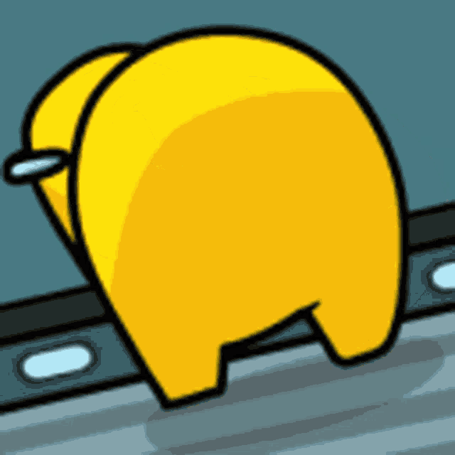
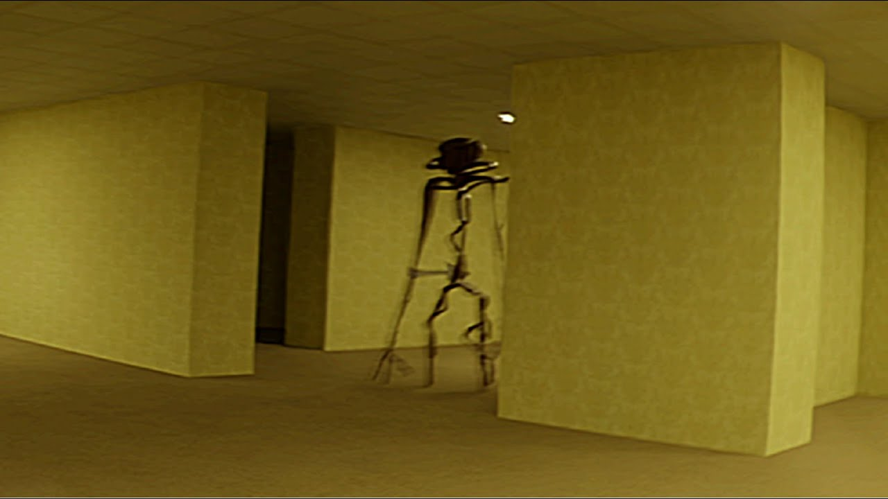
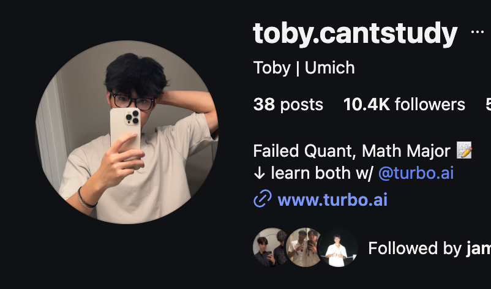
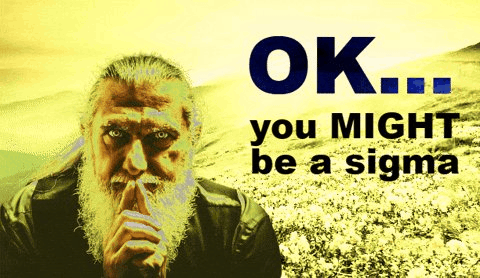

Aug. 2020
The Starter
Posted my first YouTube video at the age of 13. Created over 100 Among Us videos that averaged 50 views.

A 19 year old trying to build great things. Currently in nyc.
Try moving your mouse over the timeline.
Try clicking the timeline.




